Week 08
Notes
From the book: HTML5 and CSS3 for the Real World: 2nd Eddition
Chapters 8 and 12
CSS3 Transforms and Transitions
Transforms
The CSS3 transform property lets you lets you translate, rotate,
scale, and/or skew any element on the page. While some of these
effects were possible using previously existing CSS features
(such as translating with relative and absolute positioning),
CSS3 gives you unprecedented control over many more aspects of
the element’s appearance.
Transforms let you rotate, scale and or scew elements.
Translation
Translation
Translation functions allow you to move elements left, right,
up, or down. These functions are similar to the behavior of
position: relative; when declaring top and left , moving
elements up and down or left and right along the x and y axes.
When you employ a translation function, you’re moving elements
without impacting the flow of the document. Unlike position:
relative , which allows you to position an element either against
its current position or against a parent or other ancestor, a
translated element can only be moved relative to its current
position.
The translate(x,y) function moves an element x from the left,
and y from the top:
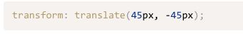
Note: Transforms and Older Browsers
Transforms require vendor prefixing for IE9, Android up to 4.4.3,
iOS8, and Blackberry 10.
Inclued this code if you want to run transformers on older browsers.
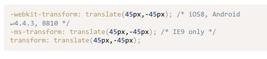
More on Translation
If you only want to move an element vertically or horizontally,
you can use the translatex or translatey functions respectively.
To move 45px to the right along the x axis, include:
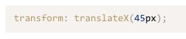
To move up along the y axis by 30px, include:
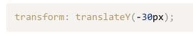
Transforms don’t work on inline elements. But that’s easy enough to fix.
Just add "display: inline-block;" to your span:
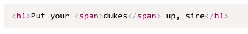
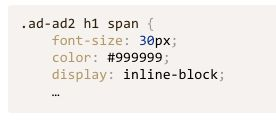
By doing this when the user hovers over "Dukes" the word will more to
the right by 40px as intended.
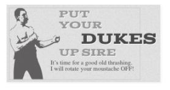
Scaling
Scaling
The scale(x,y) function scales an element by the defined factors
horizontally then vertically. If only one value is provided,
it will be used for both the x and y values, growing or shrinking
your element or pseudo-element while maintaining the original aspect
ratio. For example, scale(1) would leave the element the same size,
scale(2) would double its proportions, scale(0.5) would halve them,
and so on. Providing different values will distort the element, as
you’d expect:
You could use "transform: scale(1.5, 0.25);"
"scale(2)" to double it. or "scale(0.5)" to half it.
You can also us "scaleX(x)" for just the x axis or "scaleY(y)" for the
y axis.
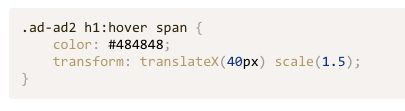
Rotation
The rotate() function rotates an element around the point of origin
by a specified angle value. As with scale , by default the point of
origin is the element’s center. Generally, angles are declared in
degrees, with positive degrees moving clockwise and negative moving
counterclockwise. In addition to degrees, values can be provided in
grads, radians, or turns, but we’ll just be sticking with degrees.
Make sure that you add this all on one line (Look at the transform part
in the picture below.)
Also make sure you more the rotation transormation by degrees.
(Example rotate(10deg)
Example of rotation
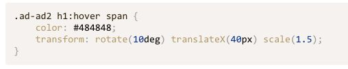
Skew
The skew(x,y) function specifies a skew along the x and y axes.
As you’d expect, the x specifies the skew on the x axis, and the
y specifies the skew on the y axis. If the second parameter is omitted,
the skew will only occur on the x axis:
Example of Skew
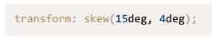
Canvas
Canvas is an API that allows you to draw anything using
JavaScript.
In addition, canvas gives us the power to manipulate pixels in images
and even video.
The Canvas API is supported in: Chrome 4+, Firefox 2+, Opera 9.6+,
Safari 3.1+, iOS 3.2+, Internet Explorer 9.0+, Android 3.0+
Canvas ws designed by Apple.
Canvas Setup
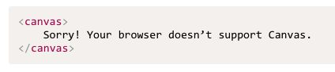
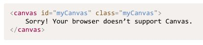
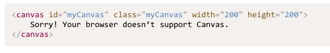
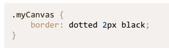
Note: All drawing on the canvas happens via the Canvas JavaScript API.
Getting the Context
This section has to do with getting the context of the canvas board.
Canvas's context is just the rendering portion of the drawing.
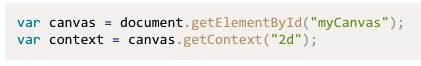
This, above, is 2d but 3d is supported with the latest browsers.
Filling Our Brush with Color
On a real-life painting canvas, you must first saturate your brush with
paint before you can begin. In the HTML5 canvas, you must do the same,
and we do so with the strokeStyle or fillStyle properties. Both strokeStyle
and fillStyle are set on a context object, and both take one of three
values: a string representing a color, a CanvasGradient object, or a
CanvasPattern object.
Think of the stroke as the border of the shape you’re going to draw.
Example: To draw a rectangle with a red border, we first define the stroke color:
Scalable Vector Graphics (SVG)
SVG stands forScalable Vector Graphics, a specific file format that allows you to describe
vector graphics using XML. A major selling point of vector graphics in general is that,
unlike bitmap images (such as GIF, JPEG, PNG, and TIFF), vector images preserve their
quality even as you blow them up or shrink them down.
-------- Questions --------
How do you prevent overlapping when transforming text?
Example with scaling.
When scaling why does my text disapear?
------------------------------
------------------------------
Team Activity
Please click the link below.
Week 8 Team Activity
------------------------------